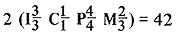

A Herdsman's Handbook For The Modern Homesteader
Proper mastication is important to the livestock's overall health and productiveness. The degree of development and the potential remaining usefulness of the creature being considered for purchase are often directly reflected by the animal's teeth. Dr. Ho
May/June 1973
All good herdsmen have an enduring interest in the teeth of their animals because they know how important proper mastication is to the livestock's overall health and productiveness. They also know that teeth can be "read" to indicate the approximate age of individual cows, horses, etc.
The question which is probably most frequently asked before an animal changes ownership is, "How old is he (or she)?" The actual age-within broad limits-of the cow or whatever, of course, is really not as important as that query might imply. What is important is the degree of development and the potential remaining usefulness of the creature being considered for purchase . . . and both these conditions are often directly reflected by the animal's teeth.
To be productive, a farm animal-say a cow-must consume large quantities of feed . . . a task that becomes increasingly difficult-even impossible-as her teeth become badly worn or missing. Thus, even a "young" cow can be non-productive if her teeth are "old".
ANIMAL TEETH ARE LIKE PEOPLE TEETH
With certain exceptions-to be noted later-the dental appendages of animals are very similar to those of humans. All the higher vertebrates-cattle, horses, pigs, sheep, goats, etc.-commonly found in the barnyard have two sets of teeth. The first-called temporary, milk or deciduous teeth-are replaced (at fairly predictable times) by permanent teeth as an animal grows older.
Livestock also exhibit individual tooth structure-pulp, dentine, enamel and cement-very much like our own. In most cases, each tooth is divided into parts called the root (hidden in the gums) and the crown (exposed and covered with enamel). The place at which the root and crown join is commonly known as the neck of a tooth.
THE DENTAL FORMULA
Animal teeth are classified as incisors, canines, premolars and molars . . . and veterinary anatomists have a very concise method of writing this information in a "dental formula".
The dental formula for an adult male horse looks like this:
The " I 3/3" indicates three incisors on the upper jaw and three on the lower jaw on each side as indicated by the " 2" at the very start of the formula. "C" stands for canine, "P" for premolar and "M" for molar. The "40 or 42" indicates the total number of teeth. Mares, by the way, usually do not have any canine teeth (if they're present at all, they are usually very small).
Here are the dental formulas for some other domestic animals (note that cattle, sheep and goats have no upper incisors and no canines at all).
Swine
Dogs
Cattle, sheep and goats:
The premolars and molars are commonly called "cheekteeth" or "grinders" and have no importance in the determination of age. For this discussion, then, we will only be con cerned with the incisors and-sometimes-the canines.
HOW THE INCISORS ARE NUMBERED AND NAMED
Each incisor has a name and number that designates its its position in the mouth. In a horse (which has six of these teeth above and six below), for instance, the two directly in the front and center of each jaw are called "centrals" or 1st incisors. The next two (one on either side) are known as "inter mediates" or 2nd incisors. The final two are the 3rd incisors.
A cow has a total of eight incisors (all in the lower jaws.) They're named centrals, first intermediates, second intermediates and corners. Numbered from the center outward, these teeth are known as 1st, 2nd, 3rd and 4th incisors.
ERUPTION OF THE TEETH OF DOGS
The eruption of a dog's permanent teeth is highly variable and is not generally a good index of the animal's age. The canine or "fang" tooth provides about as reliable an indicator as any: Narrow and rather sharp milk fangs are usually replaced by more massive and somewhat blunt permanent canines when a dog is around five months old.
Many factors, of course, can affect the validity of the above rules of thumb. Breed differences (which sometimes affect the age of maturity), individual variations, nutrition and disease can all make an animal's teeth appear sooner or later than listed here. It's best, then, to consider the above figures as useful guides rather than hard-and-fast schedules.
HOW TO "READ" TOOTH WEAR
A quick glance at the preceding information shows us that, at best, the time of eruption of an animal's teeth can help us determine its age for only the first four or five years of the creature's life. After that, however, we can "guesstimate" most livestock's maturity pretty accurately if we know how to assess the amount of wear that has taken place on their teeth. To do this really well requires much practice, but the following discussion should give you a basic understanding of how to interpret dental erosion.
CATTLE
When one year old, a member of the bovine family generally has eight deciduous incisors present. These teeth are small, narrow and have some spaces between them.
Two years: The temporary centrals have been replaced with two large, white, sharp, permanent incisors.
Three years: Four permanent incisors are present.
Four years: Six permanent incisors are present.
Five years: The animal shows eight permanent incisors and is said to have a "full mouth".
Six years: The permanent centrals-which have been "in wear" the longest-shoes the most erosion and project so far from the gums that their roots are exposed. The roots, which lack the enamel that covers a tooth's crown, are a dirty yellow color.
Seven years: The roots on the central and 1st intermediates are exposed.
Eight years: All except the two corner incisors have their roots exposed.
Nine years: The roots are exposed on all eight incisors.
Ten years: Every tooth-especially the central and Ist intermediate incisors-shows considerable wear. Some teeth may be worn away entirely. If they're all gone (and only root stubs are left), the animal is said to be a "gummer".
After 10 years, no valid estimation of a cow's age can be made.
There is, at best, a great deal of variation built into the above system of guessing cattle's age. Cows which graze on sandy pasture will show "older mouths" than their true number of years while animals that are fed only ground feed will exhibit much younger mouths.
By the way, lots of old-timers like to tease a novice herdsman by saying, "Why, your cow is so old that she's lost all her upper teeth." Many people fall for this trick but, of course, you won't since you know that cattle never have any upper incisors.
SHEEP AND GOATS
The teeth of these two species generally develop and wear in much the same fashion as cattle, except that sheep and goats usually have a full mouth at four years of age instead of five.
When goats and sheep are about four or five, their teeth appear to spread apart somewhat (due to wear). When this happens, the animals are said to be "spreading". By eight or nine-and occasionally as early as five or six-the teeth of goats and sheep begin to loosen and may even fall out, giving the afflicted animals a "broken mouth". A ewe or doe with all her teeth missing is called a gummer, just as is a cow.
SWINE
Estimating the age of hogs by their teeth is not a common practice. In passing, however, the animals' canines or "tusks" are worthy of mention.
The canines of swine are "permanent pulp" teeth (they do not have a true root) and are capable of continuous growth. In a mature boar, these tusks can grow to a length of about four inches in the upper jaw and almost eight inches in the lower. Tusks on a female are usually somewhat shorter.
The canine teeth are so situated in the mouth of a hog that the normal wear on adjoining surfaces makes them very pointed and razor-sharp. The tusks can be used to inflict severe injury to other animals and to people and many farmers trim them back to the gums periodically to reduce this danger. The trimming can be done with a heavy pair of bolt cutters or hoof nippers.
HORSES
Horses have unique and complex teeth. Instead of a simple cap of enamel covering the crown, each tooth has an infolding of the protective surface down into its center. This gives every equine tooth both an outer and an inner ring of enamel. The cavity that extends down inside the inner ring is called the "cup". When such a tooth is worn away to section C-D (see Fig. 3), the pulp cavity is exposed and is known as the "dental star". The appearance, shape and position of the cup and star are valuable aids in the determination of equine age.
A horse's incisor is nearly oval in cross-section at the tip and becomes more cylindrical or triangular nearer the root. As the tooth is worn away and continuous growth pushes more and more of it out of the gums, its cross-section changes as shown in Fig. 3. Note that the shape of the cup also changes as it appears to migrate toward the inside edge of the incisor.
There's yet another interesting relationship between aging and equine dental characteristics: With increased years, a horse's front teeth appear longer-as more of each tooth is exposed-and the incisors meet at a steadily decreasing angle (see Fig. 4).
At one year of age, then, all of a horse's deciduous teeth have erupted through the gums. The central and intermediate incisors show some wear but the corners do not yet meet.
Two years: The temporary centrals especially and the temporary intermediates are beginning to grow free of the gums. The deciduous corner teeth are up and "in wear". The appearance of the centrals indicates that their permanent replacements will erupt in a few months.
Three years: Four permanent central incisors (two above and two below) are in evidence, making this the ideal time to recognize the difference between milk nippers and their permanent counterparts. The milk teeth are usually lighter in color, smaller, have well-defined necks separating the roots from the crowns and appear to be more round than rectangular.
Four years: Eight permanent incisors (four on top and four on the bottom) are present.
Five years: All permanent incisors-six above and six below-have erupted and are in contact at the wearing surface (some wear will have occurred on the corners). The animal, at this stage, is said to have a full mouth. In all males and some mares, the canine teeth-also known as "brindle teeth"-will have shed in at this time.
Six years: The horse's mouth appears much the same as a five-year-olds. There is, however, more wear on all the teeth and the cups seem to be moving closer to the tongue-side.
Seven years: The lower corner incisors are narrower than the uppers, and both upper corner incisors have a distinct notch worn into them. This is the seven-year notch. The angle at which the teeth meet continues to decrease.
Eight years: A "dental star" appears on each central and intermediate incisor, between the lip-side of the tooth and the cup.
Nine years: The seven-year notch has disappeared, and the cups are more triangular and continue to move backwards.
Ten years: All cups are much smaller and more triangular. The dental stars have become noticeably more pronounced.
From this point on the signs of aging are only a continuation of the tendencies described above.
This description is somewhat simplified and, by no means, should be considered complete and infallible. Look for more detailed drawings and descriptions in books at your public library.
IN CLOSING . . .
If you have animals on your homestead, I suggest you examine their teeth occasionally and see if you can correlate the years (if known) of the livestock with their dental characteristics. There's a lot of satisfaction in honing your judgment until you're able to determine the approximate age of any animal that you may purchase . . . without having to rely on the estimate of someone else.
One final bit of advice, though: It's always safer to say, "She's about five or six" than to flatly state, "This cow is five years old." There's always the possibility you may run into a fellow with an excellent memory for the birthdays of his stock . . . and he could prove you wrong!
 The next installment of A Herdsman's Handbook will be ""More About Horses, Their Management and Nutrition "". |
|
 |
|
|
 |
|
|
|
|
|